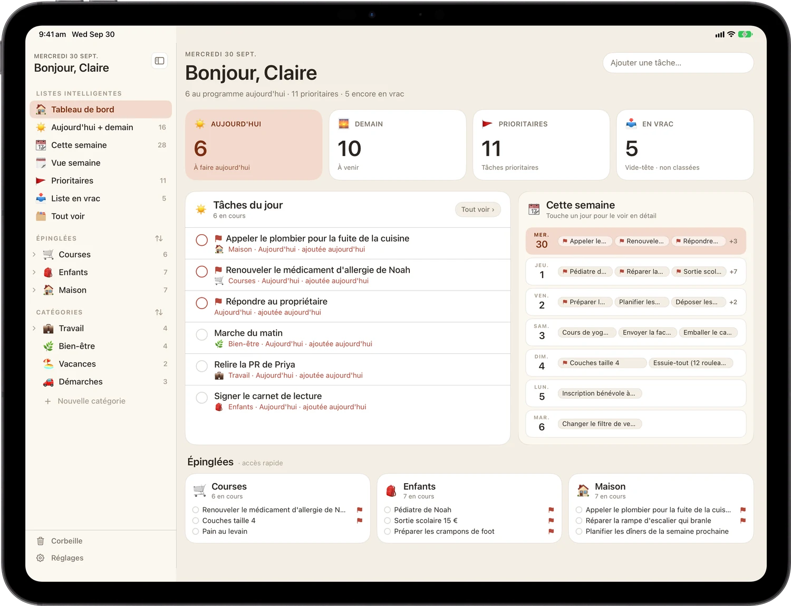
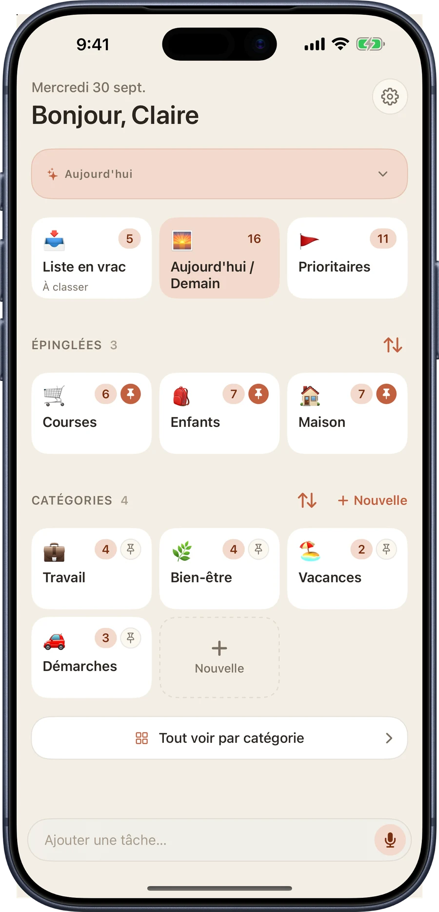
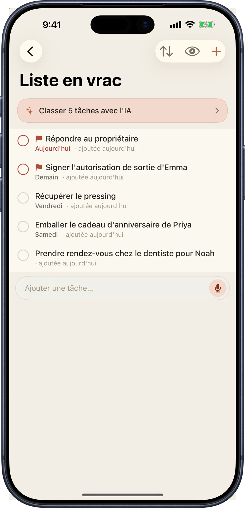
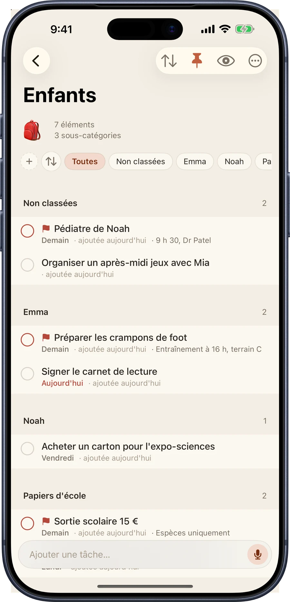
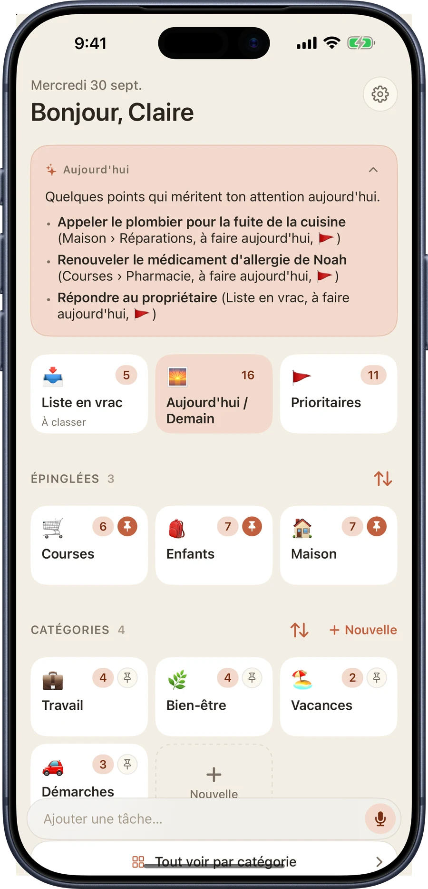
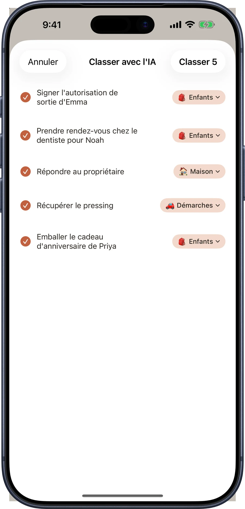
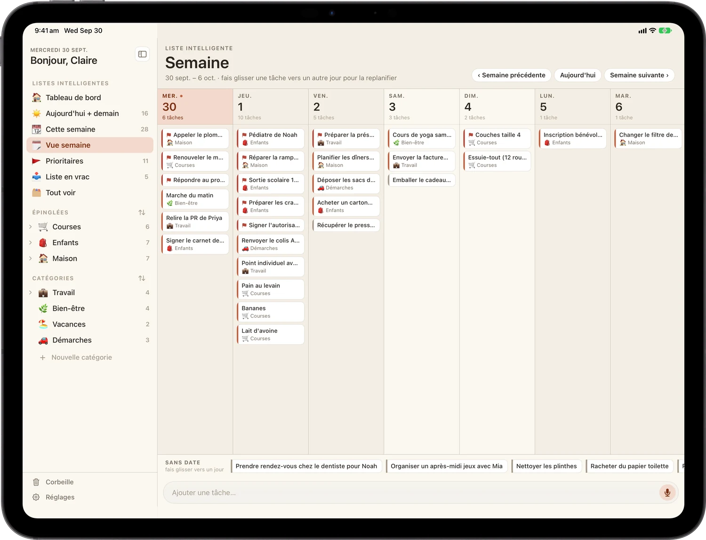
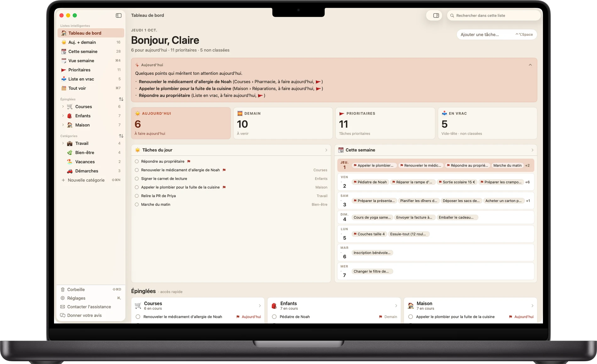

La liste qui suit le rythme de tout ce que tu portes.
Une appli de tâches chaleureuse et visuelle pour celles et ceux qui jonglent avec le quotidien. Note tout dès que ça te traverse l'esprit, classe-le quand tu veux.
Gratuite à télécharger.
iPhone, iPad et Mac. Pas de compte, pas d'inscription.
Une seule liste, sur tous les écrans


Noter
Vide ta tête maintenant. Classe plus tard.
La Liste en vrac, c'est ta boîte de réception. Tape la chose à la seconde où elle te vient. Pas de catégorie, pas d'échéance, aucune décision à prendre d'avance. Classe-la ensuite quand tu veux, peut-être dimanche.
Noter ne gêne jamais l'action. La barre d'ajout est sur chaque écran, et Siri et Raccourcis fonctionnent aussi.

Organiser
Des catégories, et des pièces à l'intérieur.
Courses, Enfants, Maison, Travail. Chacune a son emoji et sa couleur. Épingle celles où tu passes ton temps pour les garder en haut.
Quand une liste se remplit, découpe-la en sous-catégories : Emma, Noah, Papiers d'école. Balaie pour marquer ce qui compte, glisse-dépose pour réordonner et fixe une échéance pour que rien ne passe à la trappe.

Busy B Intelligence
Un petit coup de main pour le tas, entièrement sur ton appareil.
Busy B Pro ajoute trois usages discrets de l'intelligence sur l'appareil, conçus avec Apple Intelligence. Chacun s'exécute sur ton iPhone, ton iPad ou ton Mac. Rien de tes tâches n'est envoyé à un serveur, le nôtre ou un autre, et rien de ce que tu notes dans Busy B ne sert à entraîner un modèle.
- Point du jour : ouvre l'appli sur un court résumé de ce qui compte vraiment aujourd'hui, tiré de ta propre liste
- Classement express : trie toute ta Liste en vrac dans les bonnes catégories d'un seul geste, avec une étape de vérification avant que quoi que ce soit ne bouge
- Rattrapage : un coup d'œil aux tâches qui traînent, chacune avec une suggestion de prochaine étape


Le point du jour, le classement express et le rattrapage nécessitent un appareil compatible avec Apple Intelligence, activée dans Réglages. Tout le reste de Busy B fonctionne sur tous les appareils pris en charge.
À ajouter à la voix
Dis-le, et c'est ajouté.
Busy B Pro place un micro dans la barre d'ajout. Appuie dessus, dis la tâche, et elle est transcrite entièrement sur ton appareil. Sur un appareil compatible avec Apple Intelligence, Busy B renseigne aussi la date, la catégorie et la priorité avant d'enregistrer.
Tu préfères ne pas ouvrir l'appli du tout ? Siri fonctionne aussi, gratuitement pour tout le monde sous iOS 27 ou version ultérieure : « Dis Siri, ajoute aller chercher le pressing demain à Maison dans Busy B. »
Sur iPad
Une vraie appli iPad, sur trois volets.
Le centre de commande est une vraie mise en page à trois volets : listes intelligentes, tes tâches et les détails à côté. La vue Semaine étale les sept jours d'un coup, et tu glisses une tâche d'un jour à l'autre pour la reprogrammer.

Sur Mac
Une vraie appli Mac, avec sa barre des menus.
Une vraie fenêtre avec de vrais raccourcis clavier (⌘1–⌘5) pour aller directement à une liste intelligente. Même barre latérale, mêmes tâches, même compte iCloud que ton téléphone et ton iPad.

Ce qu'il y a dedans
Assez simple pour ouvrir l'appli et commencer à écrire.
Assez puissant pour organiser une vie bien remplie.
- Liste en vrac : note tout, à tout moment, et classe quand tu veux
- Aujourd'hui et Demain : vois exactement ce qui compte maintenant
- Catégories : organise à ta façon, dès le départ
- Sous-catégories : imbrique et regroupe les tâches dans une catégorie
- Priorités et classement : balaie pour marquer l'important ou le ranger dans une catégorie
- Rappels d'échéance : de petits coups de pouce pour que rien ne passe à la trappe
- Tâches récurrentes : celles qui reviennent chaque semaine
- Vue Semaine : glisse les tâches d'un jour à l'autre pour les reprogrammer
- Centre de commande sur iPad : une mise en page à trois volets pensée pour l'iPad
- Synchronisation iCloud : tes tâches, partout, automatiquement
- Neuf thèmes : des palettes créées à la main, chacune avec son mode sombre
- Point du jour : un résumé sur l'appareil de ce qui compte aujourd'hui
- Classement express : range toute une liste dans les catégories en un geste
- Rattrapage : fait remonter les tâches qui traînent
- Appli Mac : une fenêtre native avec sa propre barre des menus et ses raccourcis clavier
- Saisie vocale : appuie sur le micro, dis la tâche, Busy B s'occupe du reste
- Siri : « ajoute une tâche à Busy B » fonctionne mains libres, gratuit pour tout le monde
Les catégories illimitées, les sous-catégories, toute la collection de thèmes, Busy B Intelligence et la saisie vocale sont inclus avec Busy B Pro, disponible dans l'appli. Siri reste gratuit pour tout le monde.
Où ça tourne
La même liste, sur l'appareil le plus proche.
Ajoute sur le téléphone, trie sur l'iPad, relis sur le Mac. iCloud garde les trois à jour sans que tu y penses.
iPhone
Des tuiles pour la journée, une boîte de réception en vrac et l'ajout d'une seule main. iOS 18 ou version ultérieure.
Disponible maintenantiPad
Le centre de commande à trois volets et la vue Semaine. iPadOS 18 ou version ultérieure.
Disponible maintenantMac
Une fenêtre native, de vrais raccourcis clavier, sa propre barre des menus. macOS 15 ou version ultérieure, Apple silicon.
Disponible maintenantTa liste, à toi
Pas de compte. Pas d'inscription. Pas de serveur chez nous.
Tes données de tâches restent à toi, synchronisées en privé via ton propre compte iCloud, directement entre tes appareils. Rien à créer, rien où te connecter, et aucune copie de ta semaine sur un serveur à nous, parce que nous n'en avons pas.
Commence par la liste d'aujourd'hui.
Gratuite sur l'App Store.
iPhone, iPad et Mac.
Une question, un bug ou une idée pour l'appli ? Écris à support@busybplanner.com et une vraie personne te répond, en général sous un ou deux jours. Les questions courantes ont déjà leur réponse sur la page d'assistance (en anglais).